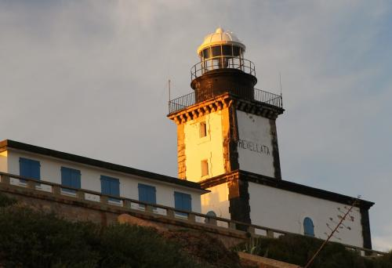

<!DOCTYPE html>
<html>
	<head>
		<meta charset="UTF-8"/>

		<meta name="viewport" content="width=device-width, initial-scale=1" />
		<title>
			STARESO location and SST field
		</title>
		<script src ="https://cdnjs.cloudflare.com/ajax/libs/leaflet/1.0.3/leaflet.js"></script>
		<link rel="stylesheet" href="https://cdnjs.cloudflare.com/ajax/libs/leaflet/1.0.3/leaflet.css" />
		<link rel="stylesheet" href="https://cdnjs.cloudflare.com/ajax/libs/leaflet.fullscreen/1.4.3/Control.FullScreen.css"/>
		<style type="text/css">
			#map { height : 700px; }
		</style>
	</head>
	<body>

		<div id="map"></div>
		<script type="text/javascript" src="data/CTD1.js"></script>
        <script type="text/javascript" src="https://cdnjs.cloudflare.com/ajax/libs/leaflet.fullscreen/1.4.3/Control.FullScreen.min.js"></script>
		<script>


			var map = L.map('map', {
				fullscreenControl: true,
				}).setView([42.584, 8.745], 14);


			var positron = L.tileLayer('http://{s}.basemaps.cartocdn.com/light_all/{z}/{x}/{y}.png', {
				attribution: '©OpenStreetMap, ©CartoDB',
			});

			var Esri_OceanBasemap = L.tileLayer('http://server.arcgisonline.com/ArcGIS/rest/services/Ocean_Basemap/MapServer/tile/{z}/{y}/{x}', {
				attribution: 'Tiles &copy; Esri &mdash; Sources: GEBCO, NOAA, CHS, OSU, UNH, CSUMB, National Geographic, DeLorme, NAVTEQ, and Esri',
				maxZoom: 13
			});


			// Add EMODnet Bathymetry layers

			L.tileLayer.wms("http://portal.emodnet-hydrography.eu/geoserver/wms", {
            layers: 'emodnet:mean_singlecolour', //smooth_multicolour',
            format: 'image/png',
            transparent: true,
            attribution: "EMODnet bathymetry",
            opacity: 0.3
			}).addTo(map);

			var bathymetryLayer = L.tileLayer.wms("http://ows.emodnet-bathymetry.eu/wms", {
				layers: 'emodnet:mean_atlas_land',
				format: 'image/png',
				transparent: true,
				attribution: "Emodnet bathymetry",
				opacity: 0.8
			});
			var namesLayer = L.tileLayer.wms("http://ows.emodnet-bathymetry.eu/wms", {
				layers: 'world:sea_names',
				format: 'image/png',
				transparent: true,
				attribution: "Emodnet bathymetry",
				opacity: 0.2
			});
			var underseaLayer = L.tileLayer.wms("http://ows.emodnet-bathymetry.eu/wms", {
				layers: 'gebco:undersea_features',
				format: 'image/png',
				transparent: true,
				attribution: "Emodnet bathymetry",
				opacity: 0.2
			});
			var coastlinesLayer = L.tileLayer.wms("http://ows.emodnet-bathymetry.eu/wms", {
				layers: 'coastlines',
				format: 'image/png',
				transparent: true,
				attribution: "Emodnet bathymetry",
				opacity: 0.8
			});

			var bathymetryGroupLayer = L.layerGroup([bathymetryLayer, coastlinesLayer, namesLayer, underseaLayer]);
			bathymetryGroupLayer.addTo(map);


			var baseMaps = {
				"Positron": positron,
				"Ocean Base map": Esri_OceanBasemap,
			};

			// Some markers for the main points of interest
			var staresoIcon = L.icon({
				iconUrl: 'images/stareso_icon.png',
				iconSize:     [60, 40], // size of the icon
				iconAnchor:   [20, 20], // point of the icon which will correspond to marker's location
				popupAnchor:  [-10, -10] // point from which the popup should open relative to the iconAnchor
			});

			var lighthouseIcon = L.icon({
				iconUrl: 'images/lighthouse_icon.png',
				iconSize:     [40, 40], // size of the icon
				iconAnchor:   [20, 20], // point of the icon which will correspond to marker's location
				popupAnchor:  [-10, -10] // point from which the popup should open relative to the iconAnchor
			});

			var weatherIcon = L.icon({
				iconUrl: 'images/weather_icon.png',
				iconSize:     [40, 40], // size of the icon
				iconAnchor:   [20, 20], // point of the icon which will correspond to marker's location
				popupAnchor:  [-10, -10] // point from which the popup should open relative to the iconAnchor
			});

			markerStareso = L.marker([42.580430, 8.724207], {icon: staresoIcon});
			markerStareso.addTo(map);
			markerStareso.bindPopup(
				'<b>STARESO</b><div></div>',
				{minWidth : 256}
			);

			L.marker([42.583005, 8.724513], {icon: lighthouseIcon}).bindPopup('Phare de la Revellata').addTo(map);
			L.marker([42.578714, 8.719076], {icon: weatherIcon}).bindPopup('Station météo').addTo(map);


			// CTD positions
			var nCTD1 = CTDlist.length;
			CTD1 = []
			CTD1layer = L.layerGroup();
			for (var i = 0; i < nCTD1; i++) {
				CT1circle = L.circleMarker(CTDlist[i][0], {radius: 3}).bindPopup(CTDlist[i][1]).addTo(map);
				CTD1.push(CT1circle);
				CTD1layer.addLayer(CT1circle);
			}
			CTD1layer.addTo(map);


			var imageUrl = './images/A2017127121500_L2_LAC_SST.png',
				imageBounds = [[38., 3.], [44., 11.]];
			SST = L.imageOverlay(imageUrl, imageBounds, {opacity: 1., zIndex: 1});
			//SST.bringToFront()


			var overlayers = {
				"SST": SST,
				"EMODnet Bathymetry": bathymetryGroupLayer
			};

			L.control.layers(baseMaps, overlayers, {collapsed:false}).addTo(map);


		</script>
		</body>
</html>
